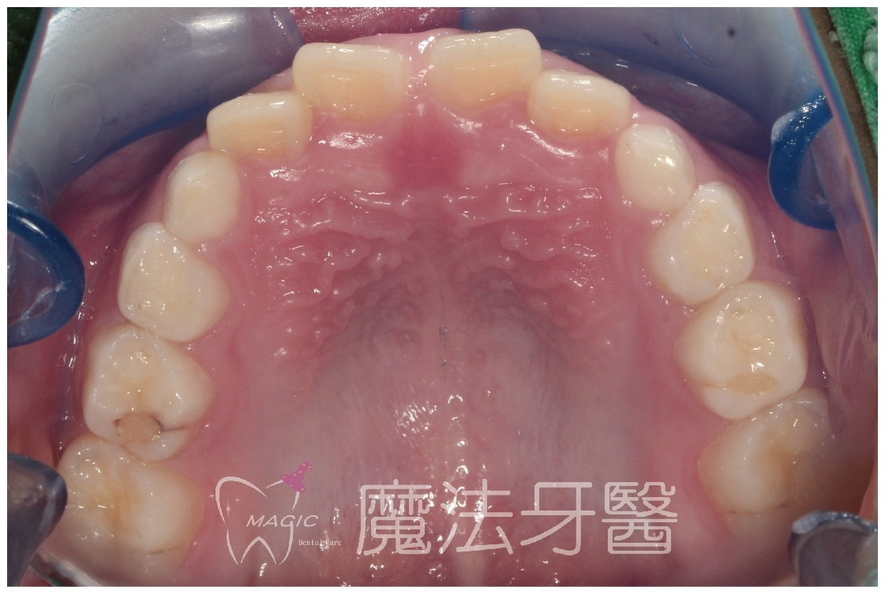
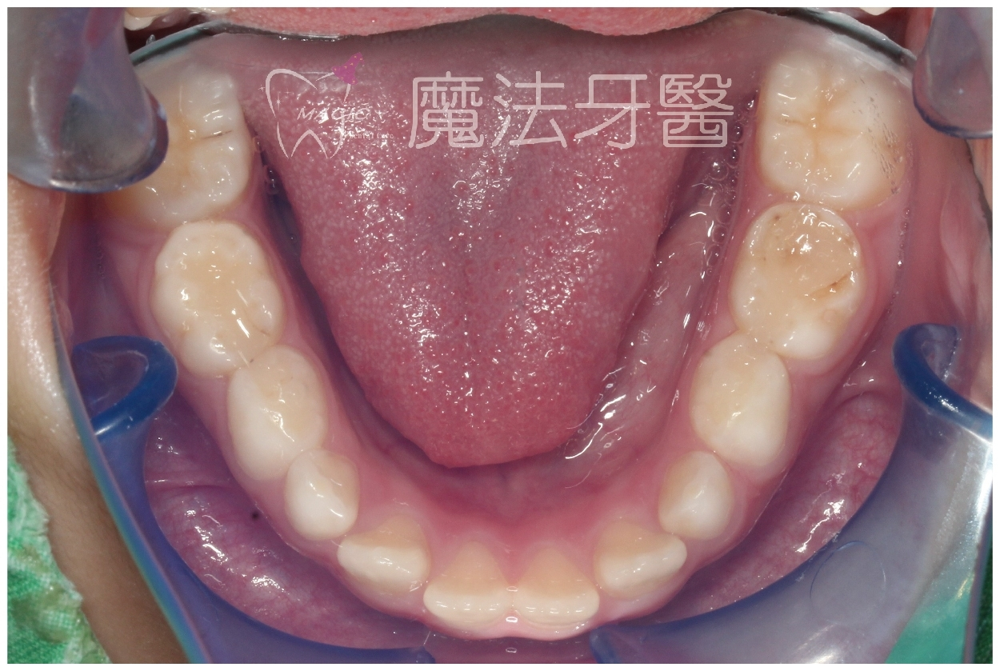

原來鼻子過敏/牙亂/開縫/牙周病竟然是「它」惹的禍！
「吞口水」為何要將「嘴巴合起來，舌頭把上顎封起來」才正確？
舌頭有力的小朋友或成人，較容易利用舌頭封閉上顎（即粉紅色的硬顎），不需用舌頭頂住牙齒即可完成吞嚥。
這是因為吞嚥時需要產生負壓，才能有效將口水和食物推向食道，進入消化道。
因此，在嘴巴張開的情況下，吞嚥會變得困難。
因此，正確的吞嚥模式，是舌頭每一次封閉的時候，都是舌頭頂上顎產生完全的封閉效應。
反之，錯誤的吞嚥模式多是舌頭往牙齒方向推擠，來產生封閉的負壓效應，方便吞嚥。
「錯誤的吞嚥模式」會產生什麼樣的副作用呢？
這一類患者，「舌頭」大多「肥大而無力」或「舌繫帶過緊」，那會產生什麼「不好」的後果呢？
1.兒童牙弓與鼻子過敏
95%以上鼻子過敏的兒童，其牙弓通常呈狹窄的小U型或V型，伴隨口顎功能異常及舌頭問題明顯。
治療方式：擴開上顎牙弓可使改善率達95%，其中6至10歲的治療效果尤為顯著。
Placeholder
Placeholder
2.錯誤吞嚥模式的影響
嬰兒時期若採用錯誤吞嚥模式吸奶，易養成「口呼吸」習慣，進一步導致鼻子過敏。
成長階段特徵：
混合齒列期（6-12歲）：出現牙齒凌亂、暴牙、開縫。
青春期：牙齒問題更為明顯，可能導致自卑感，影響社交。
鼻子過敏進一步加重，影響睡眠與血氧濃度，導致腦部發育受損，學習集中力下降。
3. 咬合與腦部發育的關聯
咬合良好的孩子腦部血流量增加，促進海馬迴生長，有助於記憶力提升。
腦部發育約在10歲定型，因此治療牙齒的黃金期不可錯過。
4.成人咬合問題與牙周病
成人若舌頭無力、肥大，吞嚥時需頂牙齒才能完成，長期造成牙齒損耗，進而引發牙周病。
成人每日吞嚥超過1000次，10年間累積吞嚥次數達365萬次，對牙齒損害極大。
5.舌繫帶過短的影響
舌繫帶過短使舌頭無法封閉上顎（硬顎），導致吞嚥時需頂牙齒產生負壓，進而影響口腔功能。
建議先進行舌繫帶雷射處理（無痛無血），並同步訓練舌頭肌力，讓舌頭能上抬並「瘦身」。
新式矯正的重要性
_Image Enhancer.jpg) Placeholder
Placeholder
1.訓練口顎功能
新式矯正器能幫助訓練舌頭及口周肌肉，預防牙周病和矯正失敗。
成人亦可配戴新式矯正器，通過日常訓練提升口腔功能，每日醒時配戴15至30分鐘為佳，睡眠期間也可佩戴。
2.改善鼻子過敏
矯正器訓練時會強迫鼻子呼吸，改善鼻腔通道，達到90%以上的鼻子過敏改善效果，尤其6至10歲的孩子還能擴大牙弓及鼻腔。
3.促進正確的舌頭位置與習慣
正確的舌頭休息位置為頂住上顎，而非下顎牙齒附近。
矯正器的使用可幫助建立良好的吞嚥模式，進一步改善口呼吸及鼻子過敏。
 Placeholder
Placeholder
黃金治療期與實踐建議
1.黃金治療期
6至10歲是超級黃金期，11至13歲仍是重要的治療時段。
成人需要花更多時間訓練，但效果同樣顯著。

2.實踐建議
建議每日配戴矯正器多次，每次15至30分鐘，睡眠期間也可配戴。
假期（暑假、寒假）是最佳訓練時機，堅持訓練效果驚人，優於藥物或手術。

結語
佩戴新式矯正器不僅能改善牙齒與鼻子問題，還能預防牙周病及提升整體健康。希望大家重視黃金治療期，堅持訓練，改善自我健康，並幫助更多人。